角色设定表
古风甜宠 · 女主角
- 姓名：
- 沈清辞
- 年龄：
- 25
- 身高：
- 166cm
- 体型：
- 纤细修长 仪态端庄
- 身份：
- 穿越王妃
- 性格：
- 冷静果断 外柔内刚
- 识别点：
- 左眼下小痣 黑长直
简介：
现代外科医生，穿越成王妃。
日常穿月白襦裙配青色披帛，
高光戏换红色嫁衣。
本表为日常造型。
配色方案
- 发色
#151517 - 瞳色
#422F29 - 肤色
#E9C8B7 - 唇色
#BA6F6A - 上襦
#EFEEE8 - 长裙
#D6DEDA - 披帛
#B5CBC4 - 腰带/绣鞋
#A3BCB6 - 白玉
#E0E1DA
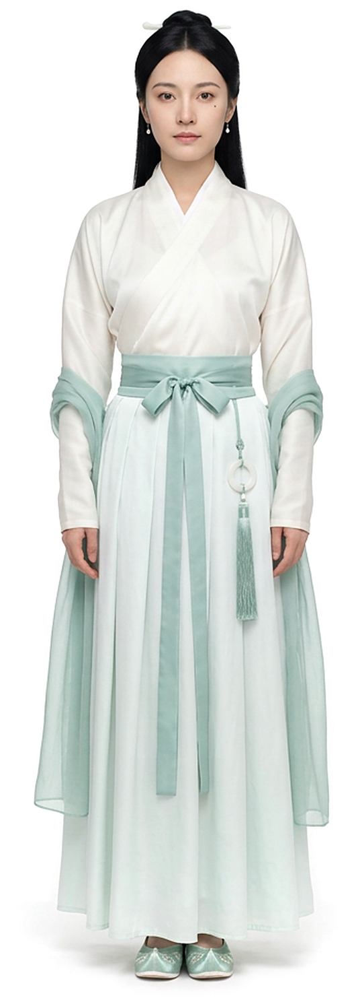
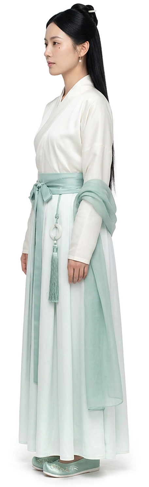
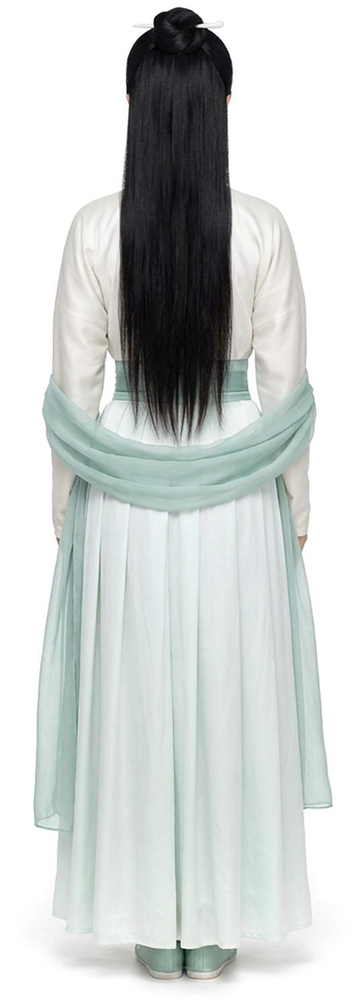
细节展示
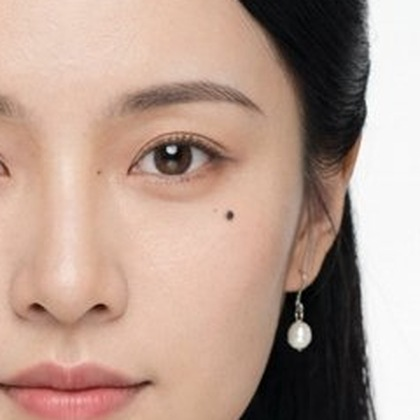
小痣左眼下方角色识别点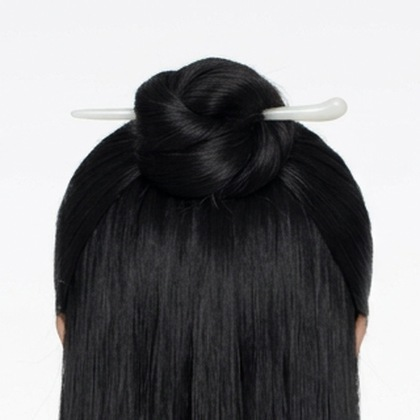
发簪白玉发簪横插发髻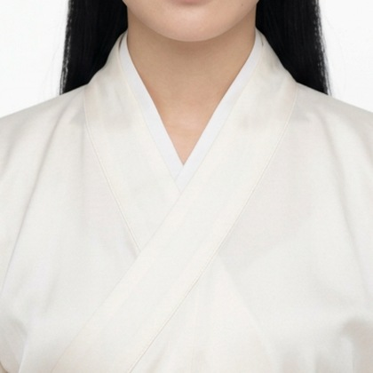
交领交领右衽白色中衣领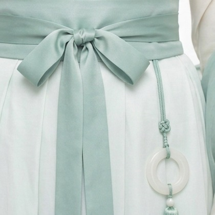
玉佩白玉环佩青色流苏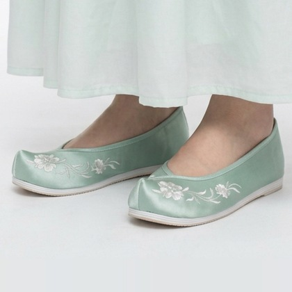
绣鞋青缎鞋面白色刺绣
Q版表情包
- 开心
- 大笑
- 冷静
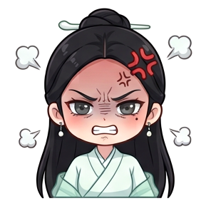
愤怒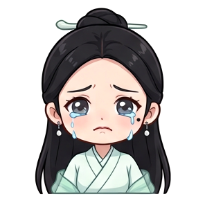
难过- 震惊
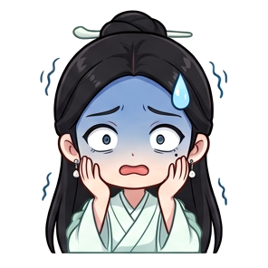
害怕- 心动
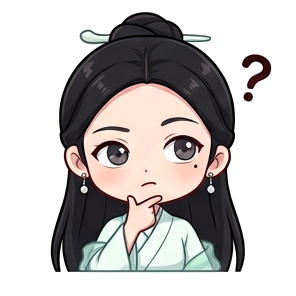
思考- 得意
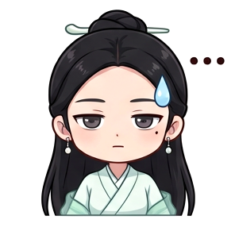
无语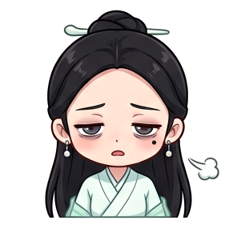
疲惫
设计说明
白襦配月白长裙，青色点缀。
交领右衽，宽腰带系蝴蝶结。
披帛与流苏让动作更显飘逸。
全剧保持同一套配色。
服装材质参考
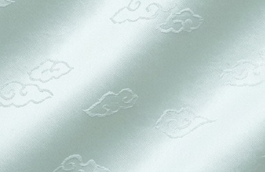
长裙面料云纹提花绸 柔滑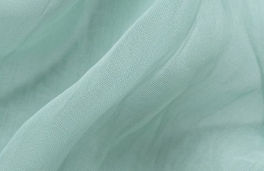
披帛面料真丝薄纱 轻透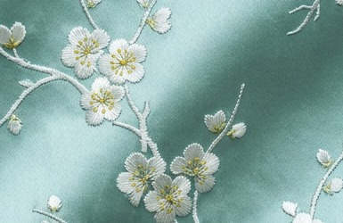
鞋面面料刺绣缎面 光泽
服装配饰参考
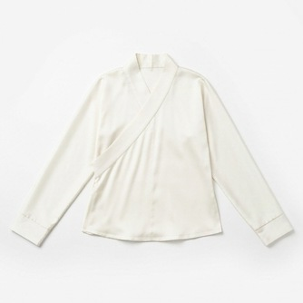
交领上襦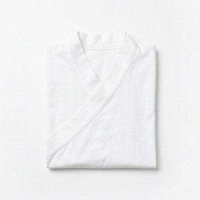
白色中衣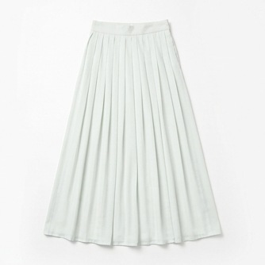
齐腰长裙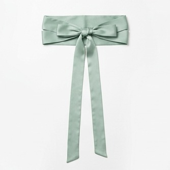
蝴蝶结腰带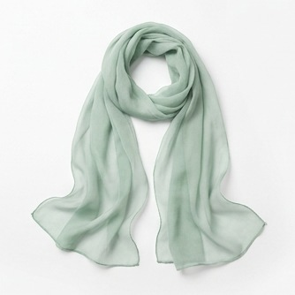
青色披帛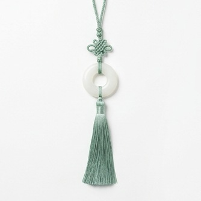
白玉环佩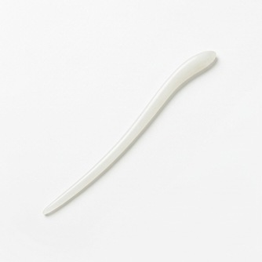
白玉发簪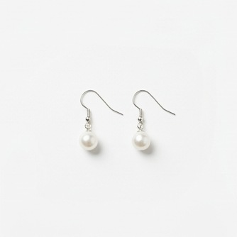
珍珠耳坠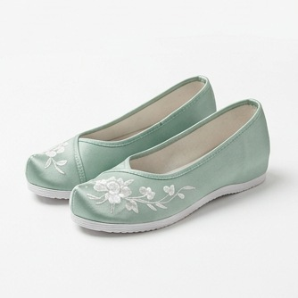
绣花鞋